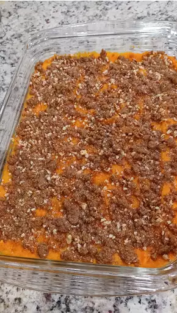

Sweet Potato Casserole

Description
This baked sweet potato casserole topped with a delicious pecan topping
is so good and creamy — I can't wait to eat it every Thanksgiving
and Christmas! Try this recipe and I'm sure it will become your new
tradition.
A traditional holiday table wouldn't be complete without a sweet potato
casserole. Perfectly flavored and topped with an irresistible pecan
topping, this is the only sweet potato casserole recipe you'll ever
need.
Ingredients
Sweet Potatoes
- 4 cups peeled, cubed sweet potatoes
- 2 large eggs, beaten
- 1/2 cup white sugar
- 1/2 cup milk
- 4 tablespoons butter, softened
- 1/2 teaspoon vanilla extract
- 1/2 teaspoon salt
Pecan Toppings
- 1/2 cup packed brown sugar
- 1/3 cup all-purpose flour
- 3 tablespoons butter, softened
- 1/2 cup chopped pecans
Steps
- Preheat oven to 325 degrees F (165 degrees C).
- Prepare sweet potatoes: Put sweet potatoes in a medium
saucepan and cover with water. Cook over medium-high heat
until tender, 10 to 15 minutes. Drain and transfer to a
large bowl.
- Mash drained sweet potatoes with a fork. Add eggs; mix
until well combined. Add sugar, milk, butter, vanilla, and
salt; mix until smooth. Transfer to a 9x13-inch baking dish.
- Make topping: Mix brown sugar and flour together in a
medium bowl. Cut in butter with a pastry cutter until
mixture is coarse and looks like peas; don't overmix. Stir
in pecans. Sprinkle topping over sweet potato mixture.
- Bake in the preheated oven until topping is lightly browned,
about 30 minutes.
- Enjoy!